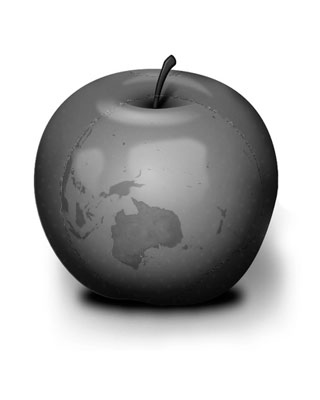

Smidge
Black + White Photography is a passion of Photo Artist Smidge.
Photo Art
Smidge has to photograph almost everything he sees. And this is how he developed his passion for Photo Art and of telling his story of everyday sights in black and white digital imaging.
A piece of fruit, a map, grafitti, or street furniture can be combined to tell a special story under Smidge's expert photography.
Background
Smidge spends most of his year travelling around Australia in search of subjects for his Black + White portfolio.
He travels to internationally as a Photo Journalist for a leading Australian news agency.
Smidge was a finalist in the 2010 and 2014 Walkley Awards.